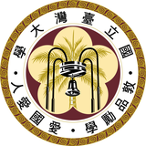

About
I’m a data-driven business professional who turns market and customer insights into strategies that drive growth. Across consumer goods, fintech and banking, I’ve worked on product launches, market strategy, business development and analytics projects, and I like taking an idea from the numbers all the way to execution with cross-functional teams.
I’m pursuing an MS in Technology Management at UIUC (Gies College of Business), building at the intersection of data, strategy and execution.
+6.8 ppRexona YoY value share in personal-care stores (Unilever)
40%better workflow visibility across 200+ SKUs (Unilever)
29merchant wins in two pilot markets (JKOpay)
+738%Instagram followers YoY (NTU Data Analytics Club)
Experience

Unilever · Go-To-Market Intern
Taipei, Taiwan
- Contributed to YoY value-share gains of 6.8, 4.8 and 1.7 pp for Rexona, Vaseline and AXE through rebranding, launches and trade-marketing activations.
- Delivered 2 new SKUs on time at Sam’s Club China: competitor benchmark, claims, packaging and app page.
- Built a VBA-powered PIF tracker for 200+ SKUs, improving workflow visibility by 40%.
Jul 2025 – May 2026

JKOpay · Business Development Summer Intern
Taipei, Taiwan
- Won 29 merchants in two pilot traditional markets; stalls accepting JKOpay in Taishan rose from 20% to 31%.
- Benchmarked JKOpay’s nonprofit partners against LINE Pay’s and shortlisted 59 nonprofits in gap causes.
Jul – Aug 2024
Shanghai Commercial & Savings Bank · Project Assistant
Taipei, Taiwan
- Grew the corporate chatbot’s knowledge base from 243 to 415 Q&A entries, linking 234 follow-up questions to 145 parent topics.
- Benchmarked two leading banks’ chatbots and recommended 5 fixes.
Jul – Aug 2023
Leadership

NTU Data Analytics Club · Marketing & PR Director
Taipei, Taiwan
- Led a 6-member team; YoY interactions grew 59% on Facebook and 100% on Instagram, with followers up 19% and 738%.
- Coordinated corporate visits with Unilever, Deloitte, SinoPac, Shopee and Hotai.
Jun 2025 – Jun 2026
Projects

Showtime Cinemas · Consumer Behavior Analytics
Taipei, Taiwan · team of 7
- Cleaned the chain’s booking data in Python and used K-means and Poisson regression to find what drives anime box office.
- Turned the findings into 3 strategy directions. Client data stays private under an NDA.
2025

L’Oréal Brandstorm 2023 · Team Leader
Taipei, Taiwan
- Led Team Multiverse to a Top 7 national finalist spot with an NFT idea to cut cosmetic waste.
- Built the business case: 32% projected net margin vs. 20% through department stores.
Nov 2022 – Mar 2023
Education
University of Illinois Urbana-Champaign, Gies College of Business
MS in Technology Management (STEM-designated)
Champaign, IL
Expected Aug 2027
Expected Aug 2027

National Taiwan University
MBA · GPA 3.93/4.00
Taipei, Taiwan
Jun 2026
Jun 2026
National Tsing Hua University
Bachelor of Economics, minor in Quantitative Finance · GPA 3.96/4.00 (Top 10%)
- 5 Academic Excellence Awards (Top 5% of class)
Hsinchu, Taiwan
Jun 2024
Jun 2024
Skills
Languages
Mandarin (native)English (fluent)
Tools
ExcelSPSSTableauSQLPowerPoint
Programming
VBAPythonR